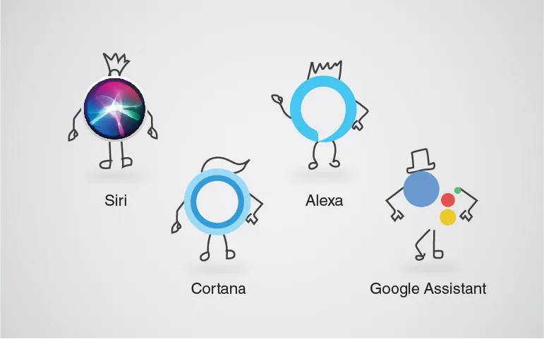
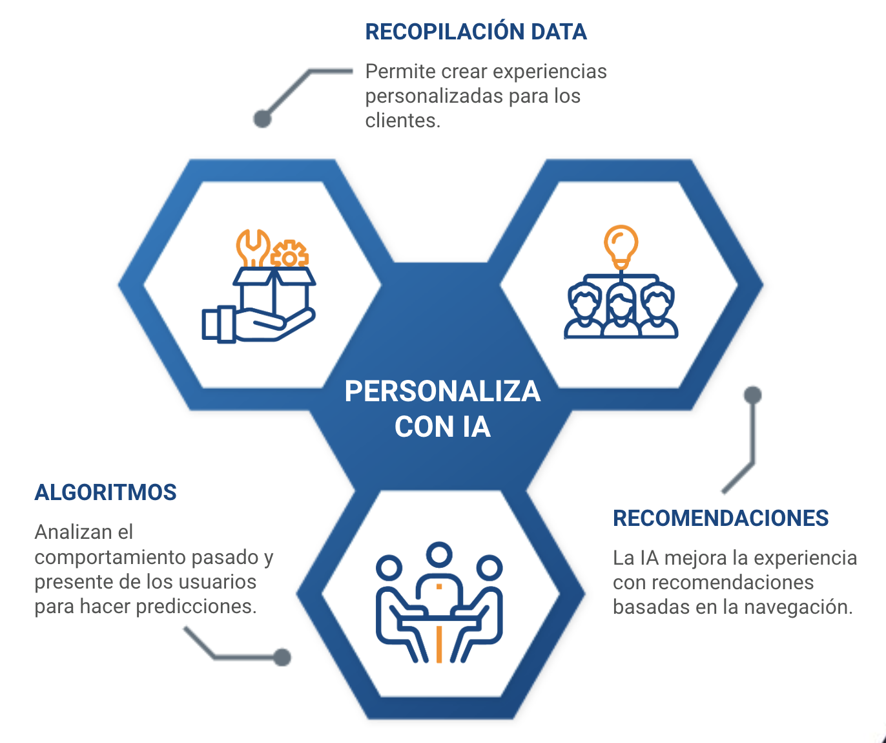
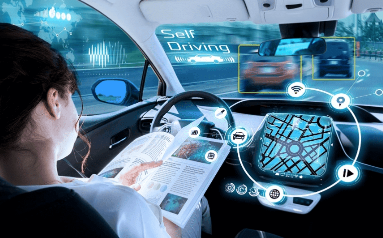
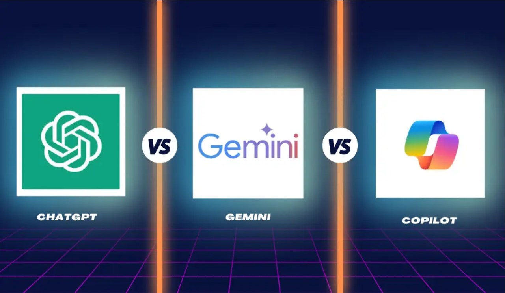

Aplicaciones actuales de la IA
- Actualmente estamos rodeados por IA y su mayor expositor es ChatGPT, Gemini, Copilot, Dall-e, chatbots, etc, IA con la que podemos interactuar obteniendo desde texto hasta imagenes o videos.
- Asistentes virtuales: Siri, Alexa y Google Assistant son ejemplos de asistentes virtuales que utilizan IA para comprender el lenguaje natural y responder a nuestras preguntas. 
- Recomendaciones personalizadas: Plataformas como Netflix, Spotify y Amazon utilizan algoritmos de IA para recomendar películas, música y productos basados en nuestros gustos y hábitos. 
- Traducción automática: Herramientas de traducción como Google Translate utilizan IA para traducir texto de un idioma a otro en tiempo real.
- Reconocimiento facial: Los teléfonos inteligentes y sistemas de seguridad
utilizan el reconocimiento facial para desbloquear dispositivos y verificar identidades.

- Vehículos autónomos: La IA juega un papel fundamental en el desarrollo de vehículos autónomos, que pueden conducir sin intervención humana. 

Aplicaciones de la IA en diferentes industrias
- Salud: La IA se utiliza para analizar imágenes médicas, desarrollar nuevos medicamentos y personalizar tratamientos.
- Finanzas: Los bancos utilizan la IA para detectar fraudes, gestionar riesgos y ofrecer servicios financieros personalizados.
- Educación: La IA se utiliza para crear experiencias de aprendizaje personalizadas y automatizar tareas administrativas.
- Comercio minorista: La IA se utiliza para mejorar la experiencia del cliente, optimizar la cadena de suministro y personalizar las recomendaciones de productos.
- Manufactura: La IA se utiliza para optimizar los procesos de producción, mejorar la calidad de los productos y predecir fallas en equipos.
Tipos de IA
- Inteligencia Artificial Estrecha (ANI): También conocida como IA débil, Está diseñada para realizar tareas específicas y no posee conciencia ni comprensión general del mundo. Ejemplos: asistentes virtuales, motores de búsqueda, sistemas de recomendación.
- Inteligencia Artificial General (AGI): Es la IA que equipara a la
inteligencia humana, con capacidad para aprender, entender, razonar y aplicar el
conocimiento a una amplia variedad de tareas. estamos cerca de llegar a ese punto con
IA´s como ChatGPT y similares.

- Superinteligencia Artificial (ASI): Sería una IA que superaría significativamente la inteligencia humana en todos los aspectos. Es un concepto más especulativo y aún está lejos de ser una realidad.
- Máquinas reactivas: Son sistemas que responden a estímulos presentes, sin capacidad de almacenar recuerdos o utilizar experiencias pasadas.
- Memoria limitada: Pueden almacenar datos pasados y utilizarlos para tomar decisiones presentes.
- Teoría de la mente: Son sistemas que podrían entender las emociones, creencias y deseos de otros, lo que les permitiría interactuar de manera más natural con los humanos.
- Autoconciencia: Serían sistemas conscientes de sí mismos y capaces de experimentar emociones.
- Aprendizaje automático: La máquina aprende a partir de datos, identificando patrones y tomando decisiones sin ser explícitamente programada.
- Deep learning: Un subconjunto del aprendizaje automático que utiliza redes neuronales artificiales para modelar datos complejos.
- Procesamiento del lenguaje natural (PLN): Permite a las máquinas entender, interpretar y generar lenguaje humano.
- Visión por computadora: Capacita a las máquinas a interpretar y comprender información visual de imágenes y videos.
- Robótica: Combina la IA con la ingeniería mecánica para crear robots capaces de realizar tareas físicas.
Según el nivel de inteligencia